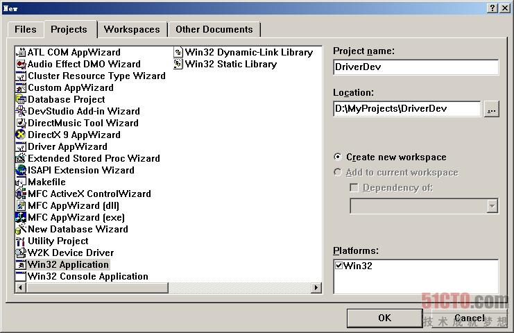
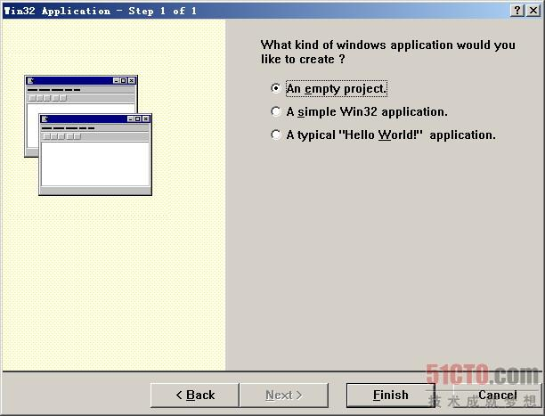
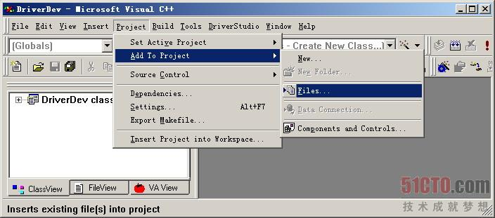
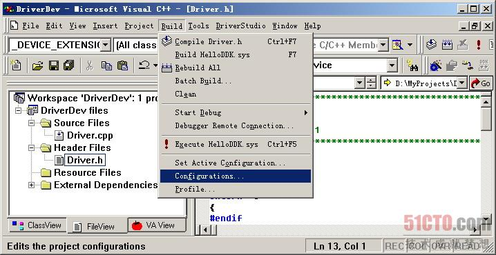
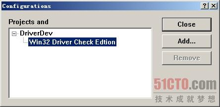
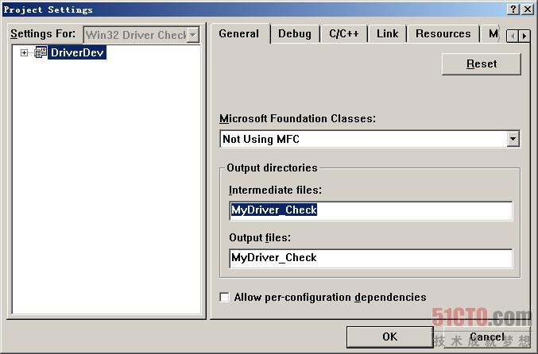
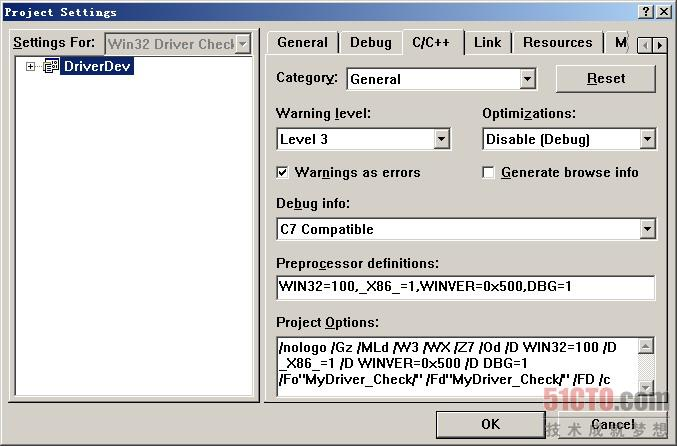
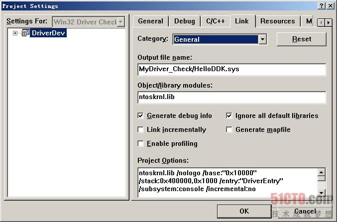
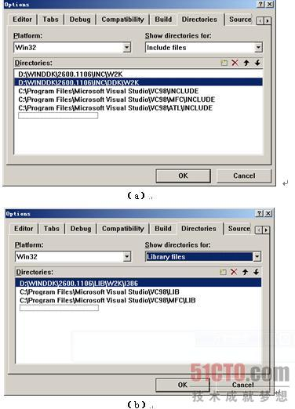

VC6编译WDM驱动
- 用VC建立一个新工程。在VC IDE环境中选择“File”|“New”，弹出“New”对话框。在该对话框中，选择“Project”选项卡。在“Project”选项卡中，选择Win32
Application（因为VC并没有提供驱动程序的工程，所以在Win32工程的基础上进行修改）。工程名为“DriverDev”，如图1-5所示。单击“OK”按钮，进入下一个对话框。在该对话框中，选择一个空的工程，如图1-6所示。


- 将两个源文件Driver.h和Driver.cpp拷贝到工程目录中，并添加到工程中，如图1-7所示。

- 增加新的编译版本，去掉Debug和Release版本，如图1-8和图1-9所示。


- 修改工程属性。选择“Project”|“Setting”，或者直接按下Alt+F7键，弹出“Project Settings”对话框。在对话框中，选择“General”选项卡。将Intermediate
files和Output files改为MyDriver_Check，如图1-10所示。

- 选择C/C++选项卡，将原有的Project Options内容全部删除，替换成如下内容，如图1-11所示。
/nologo /ML /W3 /GX /O2 /D "WIN32" /D "NDEBUG" /D "_WINDOWS" /D "_MBCS" /Fp"Device_Bridge/Device_Bridge_Driver.pch" /YX /Fo"Device_Bridge/" /Fd"Device_Bridge/" /FD /c 替换为： /nologo /Gz /MLd /W3 /WX /Z7 /Od /D WIN32=100 /D _X86_=1 /D WINVER=0x500 /D DBG=1 /Fo"Device_Bridge/" /Fd"Device_Bridge/" /FD /c
- 选择Link选项卡，将原有的Project Options内容全部删除，替换成如下内容，如图1-12所示。
kernel32.lib user32.lib gdi32.lib winspool.lib comdlg32.lib advapi32.lib shell32.lib ole32.lib oleaut32.lib uuid.lib odbc32.lib odbccp32.lib /nologo /subsystem:windows /incremental:no /pdb:"Device_Bridge/Device_Bridge_Driver.pdb" /machine:I386 /out:"Device_Bridge/Device_Bridge_Driver.exe" 替换为： ntoskrnl.lib /nologo /base:"0x10000" /stack:0x400000,0x1000 /entry:"DriverEntry" /subsystem:console /incremental:no /pdb:" Device_Bridge/Device_Bridge_Driver.pdb" /debug /machine:I386 /nodefaultlib /out:"Device_Bridge/Device_Bridge_Driver.sys" /pdbtype:sept /subsystem:native /driver /SECTION:INIT,D /RELEASE /IGNORE:4078
- 修改VC的lib目录和include目录。在VC中选择“Tools”|“Options”，在弹出的对话框中选择“Directories”选项卡。在“Show
directories for”下拉菜单中选择“Include files”菜单。添加如下3个目录，并将这些目录全置于最上，如图所示。读者可将“C:\WINDDK\2600”替换成自己的DDK安装目录。这里应该选择W2K子目录，DDK中还会有相应的XP子目录。因为XP驱动编译时候需要高版本的VC编译器，所以这里用的是W2K子目录，它编译的代码完全可以应用于Windows
2000和Windows XP操作系统下。
C:\WINDDK\2600\INC\W2K C:\WINDDK\2600\INC\DDK\W2K C:\WINDDK\2600\inc\ddk\wdm\w2k
- 在“Show directories for”下拉菜单中选择“Library files”菜单，添加如下目录，并置于最上端，如上图所示。
C:\WINDDK\2600\LIB\W2K\I386 - 编译。按下F7键，和1.3.2节一样，同样会编译出一个HelloDDK.sys文件。